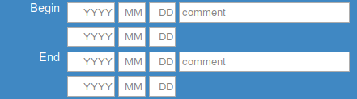
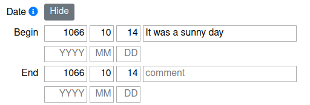
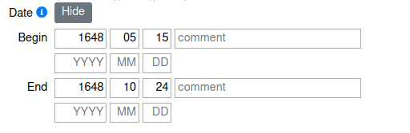
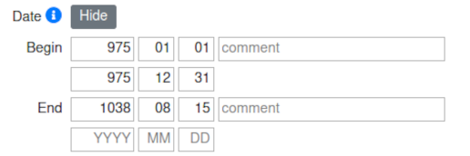
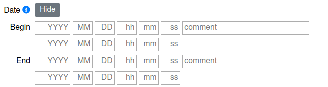

Time Spans
This section is focused on how the Date input fields work and how to enter time spans correctly.
Where to find the input fields
Date input fields can be found on the following forms:
It is not provided for the input of:
The Date field is at the bottom of the form and is initially hidden. Click Show to open it and Hide to close it. It opens automatically when dates are already present or when a date error needs attention.
How to enter dates and time spans

The current form has two views. Simple provides one date for Begin and one for End. Advanced provides two bounds for each date:
Begin — Earliest / Latest bounds the uncertain date on which the event began.
End — Earliest / Latest bounds the uncertain date on which it ended.
The screenshots in this section show the earlier four-row layout. The current form labels those rows Earliest and Latest in the Advanced view; the screenshots are retained unchanged.
Each pair describes uncertainty in that particular date, not the duration of a process between the two bounds. A single bound can be left open when its limit is unknown. The detailed form behavior is described in Date.
Input values
Year: -4713 to 9999, except 0. Use a minus sign for BC dates; for example, -1 is 1 BC.
Month: 1 to 12.
Day: 1 to 31, subject to the valid number of days in that month and year.
Comment: free text for additional information about the Begin or End date.
The YYYY, MM and DD placeholders do not require four- or two-digit input; leading zeroes are optional. A year is required for every populated bound, and a month is required when entering a day. Dates are validated against the Proleptic Gregorian calendar, including leap years; year 0 does not exist and dates before 4713 BC cannot be recorded.
Precise dates
For an exact calendar day, enter the full date in Simple. For the Battle of Hastings, enter 1066-10-14 as both Begin and End. A date without a specific time represents the whole day, not one instant.
In Advanced, enter that same date in both bounds of each exact date: put 1066-10-14 in Begin Earliest and Begin Latest, and in End Earliest and End Latest. A date entered in only one Advanced bound is an open earliest or latest limit, not an exact date.

The Peace of Westphalia refers to two peace treaties, signed in Osnabrück on 1648-05-15 and in Münster on 1648-10-24. In Simple, enter 1648-05-15 as Begin and 1648-10-24 as End. In Advanced, enter each date in both bounds of its pair: Begin Earliest and Begin Latest for 1648-05-15, then End Earliest and End Latest for 1648-10-24.

Uncertain dates and ranges
Use Advanced when the date of the beginning, the date of the end, or both are uncertain. The four bounds are:
Begin Earliest: earliest possible date on which the event began.
Begin Latest: latest possible date on which it began.
End Earliest: earliest possible date on which it ended.
End Latest: latest possible date on which it ended.
An Earliest value is completed toward the start of its precision: for example, year 800 becomes 800-01-01, and month 800-05 becomes 800-05-01. A Latest value is completed toward the end: year 800 becomes 800-12-31, and month 800-05 becomes 800-05-31. If all time fields are blank, the corresponding time is 00:00:00 for Earliest and 23:59:59 for Latest. The bounds are inclusive.
For example, entering 800 as Simple Begin gives a beginning date anywhere in that year, from 800-01-01 through 800-12-31. Entering 800-05 gives the whole month. In Advanced, entering 800 only in Begin Earliest sets a lower bound of 800-01-01 and leaves the latest bound unknown; it does not represent the whole year. To record a beginning date known to fall between 1800 and 1809, enter 1800 in Begin Earliest and 1809 in Begin Latest.
King Stephen I of Hungary was born at an unknown time in 975 and died on 1038-08-15. In Simple, enter 975 as Begin and 1038-08-15 as End. In Advanced, enter 975 in both Begin Earliest and Begin Latest to express the birth-year interval. For the exact death day, enter 1038-08-15 in both End Earliest and End Latest; filling only End Earliest would instead leave the latest end date unknown.

One-sided bounds
When only the Latest bound is known, leave Earliest empty. For example, if a charter records that a church was consecrated on 1150-06-15, enter that date in Begin Latest and leave Begin Earliest empty. The beginning is known to have occurred by that date at the latest; its earliest limit is unknown. The displayed value uses by ….
Similarly, if an itinerary dated 1220-10-04 says a church had already been destroyed or was no longer standing, enter that date in End Latest and leave End Earliest empty. This means the end occurred by 1220-10-04 at the latest; it does not assert how long a destruction process lasted.
The inverse is also possible. If a source establishes that a beginning date was no earlier than 1150-06-15, enter it in Begin Earliest and leave Begin Latest empty. The displayed value uses from …; the latest limit remains unknown. End Earliest can be used in the same way when only a lower bound for the ending date is known. When both bounds are present, the display shows between … and …. If both bounds describe the same full calendar day without different custom times, the display shows a single date.
Activate hours, minutes, and seconds
Time fields are available in Advanced when the Time module is enabled in your profile or when the entity already has date values that require time fields. To enable the module, click the gear, open Profile, choose Modules, click Edit, and select Time. You may need to refresh the form afterwards. The time fields do not appear in Simple.
Hour values range from 0 to 23; minutes and seconds range from 0 to 59. A minute requires an hour, and a second requires a minute. Omitted time fields are completed according to the bound: Earliest fills missing values with 00 (for example, 00:00:00 when blank, 12:00:00 for hour 12, or 12:30:00 for 12:30), whereas Latest fills a missing hour with 23 and missing minutes and seconds with 59 (for example, 23:59:59 when blank, 12:59:59 for hour 12, or 12:30:59 for 12:30).
